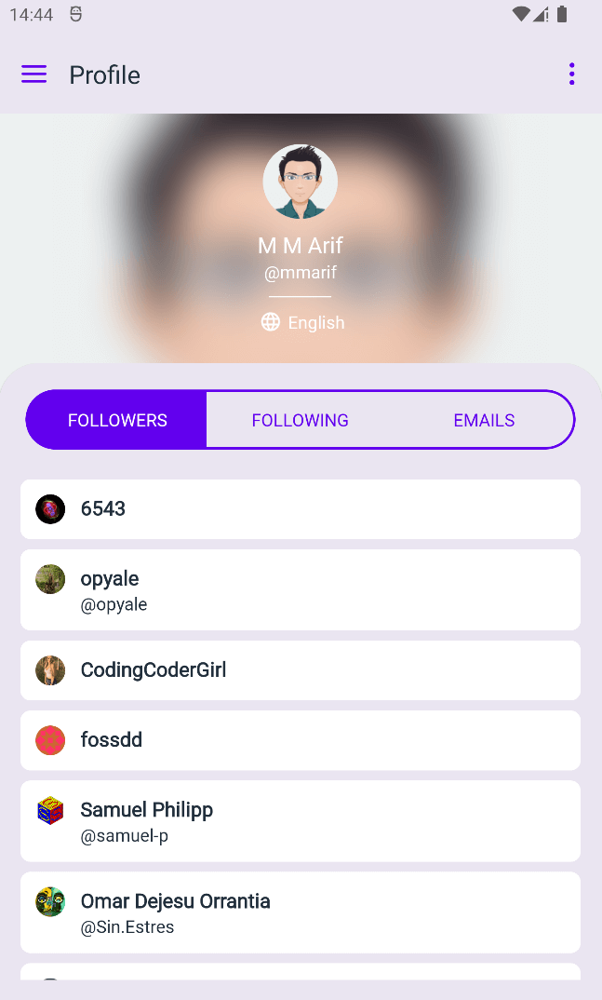
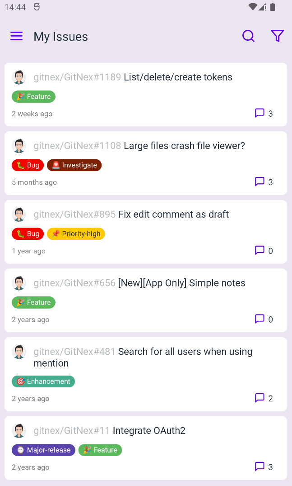
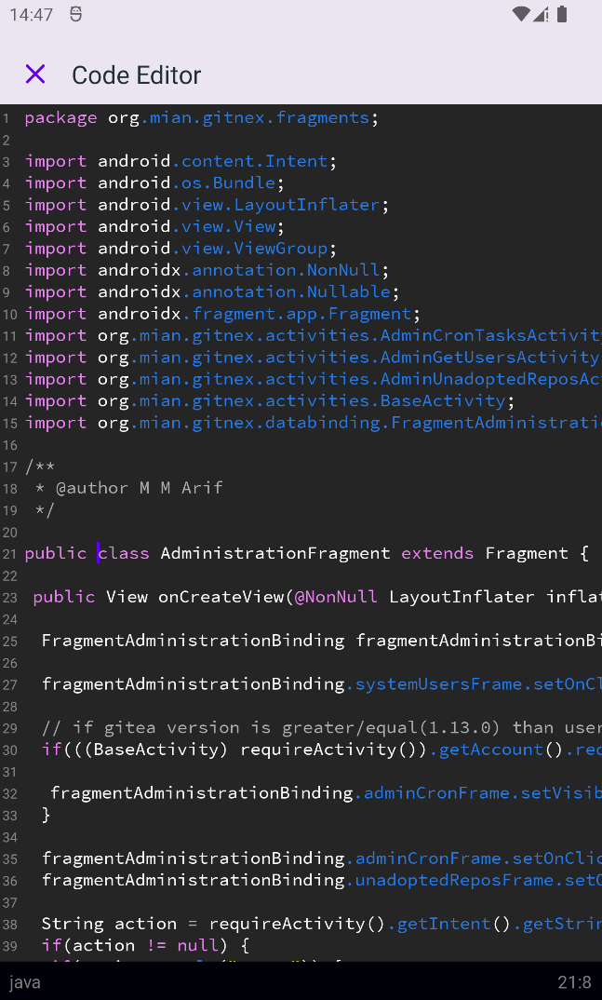
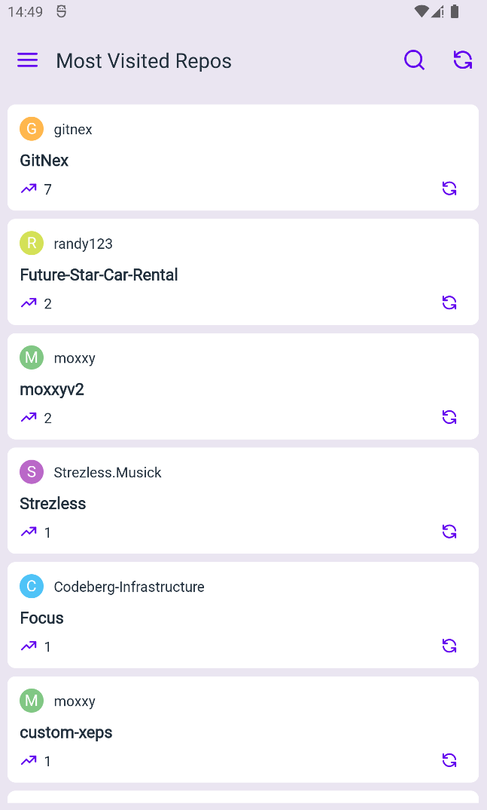
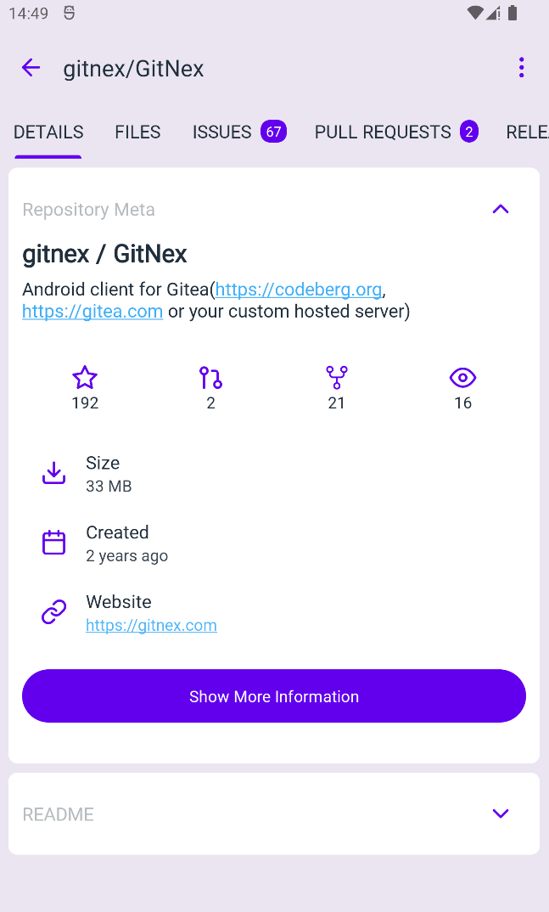
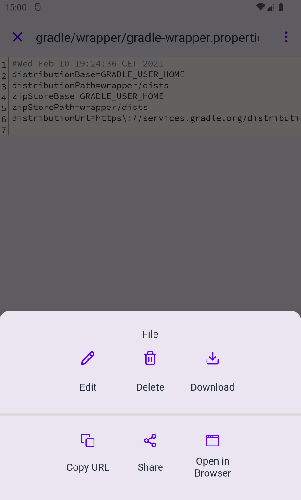

GitNex is revamped to implement Material You design. We hope this change will be a pleasant change for all of you.

Profile screen

My issues
2. Code editor
GitNex 4.5.0 comes with a new code editor for files editing. If the language you use is not supported, please feel free create an issue for reference.

Code editor
3. Most visited repositories
We have added most visited repositories feature, once you visit a repository directly or via issue/link it will be added to the list. You can think of it as a favorite repos list.
You can remove a repository from the list or just clear the whole list.

Most visited repos screen
4. Repository owner in the title bar
To make things a bit more clearer, we have added owner of the repository to the title bar.

Repository owner
5. Copy/share/open in browser options for a file
We have extended the file bottom sheet with more options like copy url, share it or quickly open it in a browser.

Copy/share/open in browser options
Improvements
- Go back to owner screen(org/owner) when tap on app back button inside a repository
- Search forks by owner name too
- Open wiki links from emails and third party apps
Bug fixes
- Fix mark all notifications as read
- Fix editing/creating wiki page scrolling
- Fix crash on incorrect repository owner and name case
- Add fallback for missing version information in database
- Remove an unnecessary error when no files are found